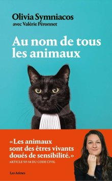

Bien-être animal
Politique municipale, actions du comité consultatif, conseils pratiques pour les propriétaires d'animaux et salon annuel.
Fiches Pratiques à télécharger
Ouvrages & Lectures recommandées

Harmony à portée de pattes
Facile à lire, il va à l'essentiel : les achats à prévoir, la santé (de la vaccination à la trousse de secours), les apprentissages (de la propreté au rappel), et l'éducation positive. En prime : 10 activités à réaliser soi-même.

Aux animaux ma vie de vétérinaire
La réalité crue de la profession de vétérinaire rural en Lorraine par Albert DEBREUX. Un métier vécu comme une passion, alternant anecdotes amusantes, drames, échecs et réussites. Facile à lire et émouvant.

Au nom de tous les animaux
Magnifique plaidoyer d'Olivia SYMNIACOS, avocate spécialisée en droit animalier. Des histoires bouleversantes qui montrent que la cause animale mérite un engagement total.